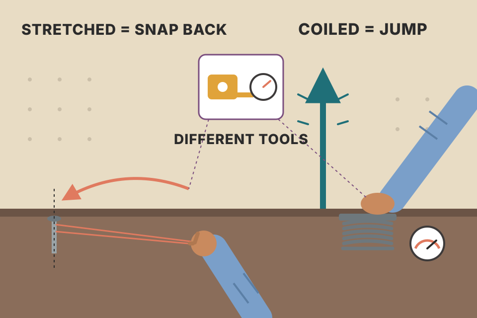
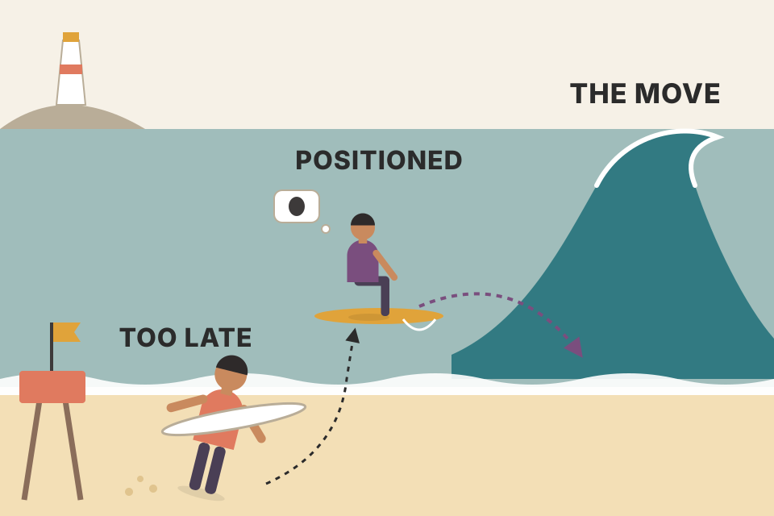
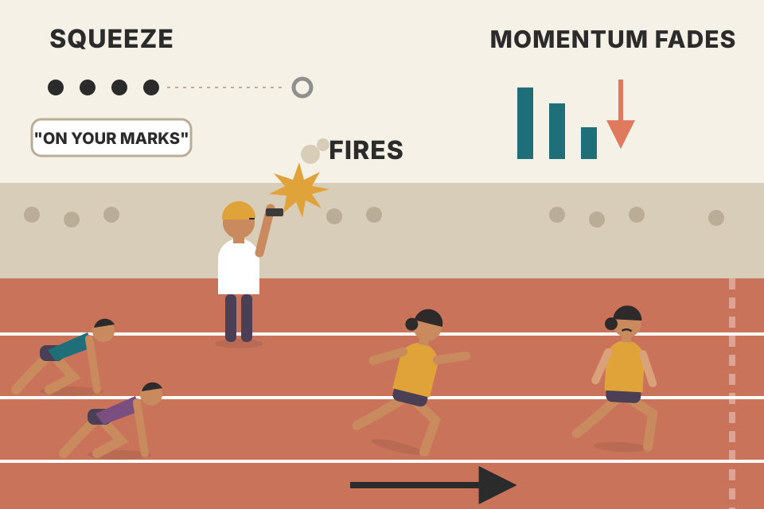
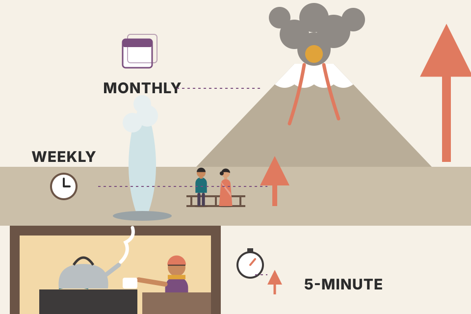

Carter's favourite setup. When Bollinger Bands shrink inside Keltner Channels the market has gone quiet. When they pop back out, he gets in the way a 12-bar momentum reading points, and he holds until momentum fades. This page goes through the whole chapter in the book's order: why he prefers it to mean-reversion trades, how the three indicators fit together, the eight rules and the stop tables, every worked trade (mini Dow, bonds, S&P, euro, Google), the crash stories, the weekly and monthly charts, and the two filters. All charts use simulated prices. Where a chart replays one of Carter's trades, the entry, stop and exit levels are his, and the path between them is made up.
Markets swing between two states: stretched away from their average, and coiled up near it. Chapter 10 traded the first state (bet on a snap back). This chapter trades the second (bet on the release). The rest of the chapter is the measuring tool, the rules, the evidence and the filters.
Chapter 10 ended by saying mean reversion (RTM) is the best way to trade unless there is a squeeze. Carter says this one line sums up trading. You either play price going back to the mean (from a pivot, an extreme $TICK reading or a test of an outer band), or you find a market sitting near the mean (a key moving average such as the 21 EMA) that is building up a squeeze, which tells you it will probably burst away from the mean.
| Back to the mean (RTM, Ch.10) | Away from the mean (squeeze) | |
|---|---|---|
| Win rate | higher | a bit lower |
| Speed | slower to work out | works out much faster |
| Main danger | good chance of blowing up on you | much smaller chance of moving against you again and again |
| Carter uses it for | cash flow: taking income out of the account | wealth: growing the account, on bigger time frames |
He trades both, but squeezes away from the mean top his list. He uses the squeeze for day trading, swing trading and position trading. He calls it the best tool he has found for setting up longer moves, especially on daily, weekly and monthly charts, and says it has worked well on new markets such as Bitcoin and Ethereum. He finds it hard to look at a chart without it.
What it tells him is not "overbought or oversold" (which he says means about as much as most Twitter posts). It tells him where a market is in its natural cycle (Chapter 3). Far from the mean and near the top of its cycle? Focus on RTM trades. Near the mean and storing energy, i.e. under accumulation or distribution? Get ready for a big move away from the mean: a squeeze. That helps decide both where to put capital and which kind of strategy to use. One example: when a squeeze runs out of energy it is a signal to exit, but it is also one of the best times to start selling option premium (an iron condor, for example), because those strategies profit when a market stalls and goes back to moving sideways.
Can it be used on small charts, like a five-minute chart for day trading? Yes, and the chapter shows such trades. But it shines on the bigger time frames.

A rubber band and a spring. A stretched rubber band (price far from its average) snaps back: that's RTM. A compressed spring (price pinned close to its average, moving less and less) jumps when let go: that's the squeeze. You need different tools to tell which one you are holding.
Both trades are bets on volatility changing. RTM bets that a big move away from the average is followed by a smaller move back. A squeeze bets that a stretch of unusually small moves is followed by bigger ones. Volatility in real markets tends to drift back toward its normal level from both sides, which is why both can work. The direction of the release is a separate question, and the squeeze answers it with momentum (section 3). On the chart, amber shading marks bars more than the slider's distance from the 21 EMA (Carter's RTM zone). Teal marks bars where Bollinger Bands are inside Keltner Channels (the squeeze zone). The readout counts how often both happen on the same bar: a market is usually either stretched or coiled, not both.
indicators/trend_vs_sideways_tools.md test on 185 Nifty 200 stocks found that after a Bollinger squeeze (width in the bottom 20% of the past year) the next 10 days' volatility was 10% higher, and after very wide bands it was 18% lower. That is exactly the "volatility returns to normal" behaviour both chapters lean on.Bigger time frames lead. The squeeze works best on hourly, two-hour, daily, weekly and monthly charts. There is never a reason not to know what they are doing, and never a reason to fight a squeeze that has fired on one of them. If the 60-minute S&P chart has fired a long squeeze, taking short signals on the five-minute chart is a losing game: "it just keeps going higher" is the whole point. Even if a weekly squeeze is too slow for your plan, know about it. If the weekly AAPL squeeze has fired short, why buy dips on the daily chart? The easy path is down for now, and longs will probably keep getting stopped out until the weekly signal ends. Carter compares it to choosing between two offers to do the same job, one paying $8.00 an hour and one paying $100.00: fighting the weekly squeeze is taking the $8 job.
How long a signal lasts. On average a squeeze signal lasts about 6 bars, sometimes 8 to 10. So a monthly signal can last six months and a one-minute signal six minutes. The signal is the same on every time frame; only the time you spend in the trade changes.
Why hold overnight at all? Some traders hate overnight exposure, and that's fine; Carter has trouble sleeping without a position. Swing traders are already in the market when the move comes, so they catch multi-day and multi-week moves while day traders pick up a few points. Being flat overnight avoids getting hit by bad news, but if you size correctly and use limited-risk option strategies, that occasional hit is not a big deal, and you get to take part in all the big overnight moves. Find the style where you are both happy and profitable.
Markets spend a lot of time in ranges storing energy. When the move comes it is usually sudden and violent and leaves day traders behind, including days that gap open and then sit in a narrow range all day (a "gap and go"). Holding some swing positions lets him leapfrog over those day traders. Half the battle is being positioned and not stressing over a trade that isn't working yet. Markets break when they are good and ready, usually when the most people are unprepared, and sometimes that means waiting weeks. Traders who stare at charts all day get emotional, get faked out and close the trade, and then the move comes. If everyone expects a big down move, everyone is already short and nobody is left to sell. Stick to the setup.
For "swing trader anxiety" he recommends Nicolas Darvas, How I Made Two Million Dollars in the Stock Market: old, short, entertaining, and a must for anyone who jumps out of swing trades too early.
Size swing trades smaller. If you can't sleep because of overnight positions, you are trading too big for your account. Swing trades need wider stops, so the position must shrink. Set a money stop first and work backwards. With a $500 limit: a mini Dow day trade with a 20-point stop is 5 contracts; a swing trade with a 100-point stop is 1 contract. The money at risk is the same.

A surfer paddles out and waits past the break before the wave arrives. The surfer who waits on the beach and runs in when the wave is already big is too late. Being positioned is sitting on the board during the boring part.
Contracts = money stop ÷ (stop distance × dollars per point), rounded down. Because a wider stop is paired with fewer contracts, the loss if stopped is fixed. The trade-off moves to the win side: one contract held for a swing has to travel five times as far as five contracts on a day trade to make the same money, which is fine because swing moves are bigger. The time-frame argument is about the same idea of "path of least resistance": a signal on a bigger chart reflects more traders' money moving over a longer time, so small-chart signals against it run into that flow.
trading_equations.md section 8 (fixed-fractional position size) is the same calculation in shares and ₹.backtest_results_summary.md: weekly pullback and monthly momentum rotation worked, while every intraday system you tested failed or was only a lead. That fits Carter's view that the bigger time frames carry the signal.The squeeze uses quiet periods, when volatility has dropped a lot and the market is storing energy for its next big move up or down. Carter's story: left alone with his three young children, he learned that noise meant all was fine, and sudden silence meant trouble was about to happen (he found the two older ones trying to fit the youngest into the fridge). Stored energy, released.
Bollinger Band users already know that quiet shows up as the bands moving closer together. The problem is real time: how narrow is narrow enough? The setup answers that with two more tools:
The setup. The quiet period is when the Bollinger Bands narrow so much they sit inside the Keltner Channels: a real breather. The trade signal is when the Bollinger Bands move back outside. A 12-period momentum reading decides the side: above zero, go long; below zero, go short. All are standard studies. He uses TradeStation's defaults: Keltner 20 and 1.5, Bollinger 20 and 2. His team also built them into one indicator (dots plus a histogram), shown in section 7.
Keltner is a ruler that measures how big a typical bar is. Bollinger measures how far closes have wandered over the last 20 bars. If closes have wandered less than a typical bar is tall, the market is going nowhere while still trading: it is coiling.
Both envelopes sit on the same 20-bar average, so "BB inside KC" boils down to one comparison: 2 × σ(closes, 20) < 1.5 × ATR(20), i.e. the ratio in the second chart is below 1. σ measures how spread out the last 20 closes are. ATR measures the average size of each bar (high to low, including gaps). In a market that wanders like a random walk, 20 closes spread out to about 1.8 typical one-bar moves, so 2σ is about 3.6 of them, while 1.5 × ATR is usually only about 2 (ATR is a bit bigger than a one-bar close-to-close move). So on average the bands sit outside. The ratio only drops below 1 when closes keep returning to the same area while bars still have normal size: a range, i.e. orders absorbing each other. The fire is the moment that spread starts to grow again.
Momentum here is today's close minus the close 12 bars ago (the book says "12-period momentum" without a formula; this is the standard one). By default I smooth it with a 5-bar EMA, and say so wherever it matters: on the raw line, "first lower high" happens after about 2 bars on average because each bar's change is half noise, while Carter's trades last 6+ bars (section 6 lets you compare). The histogram colours (strong when growing, pale when shrinking) are my addition to make "first lower high" easy to see. Dot drawing: solid = squeeze on (the book's black dots), hollow = off (the book's gray dots). The Keltner midline type isn't given in the book; I use a 20-bar simple average with a 20-bar simple ATR, which is how TradeStation's built-in Keltner study is usually described.
Beyond the book: the commercial "TTM Squeeze" histogram is widely reported to be a smoothed (linear-regression) momentum rather than the raw 12-bar difference, which is why its peaks look cleaner than the raw line here.
trading_equations.md has the ATR formula. indicators/trend_vs_sideways_tools.md: Bollinger width predicts volatility, not direction. That's why the squeeze needs a separate direction rule.Carter uses the squeeze for both day trades and swing trades. On the mini-sized Dow (YM) a squeeze can move the market about:
| Chart | Typical squeeze move (YM points) | How often it fires |
|---|---|---|
| 2-minute or 377-tick | 10–20 | 3 to 5 signals a day |
| 15-minute | 30–50 | — |
| Daily | several hundred | 6 to 7 signals a year |
Smaller charts give more signals. The squeeze works on all markets. When the indexes are stuck in a narrow range (he jokes it was narrower than Donald Trump's political ambitions, written in 2012 and funny in hindsight), he looks to currencies, gold, bonds, oil, single stocks and now Bitcoin, Ethereum and Litecoin. For currencies, even where his examples show futures or forex charts, he is now as likely or more likely to buy in-the-money options on currency ETFs like FXE (euro) or FXY (yen), because option trades are easier to hold than futures or forex positions.
Zoom out and the same pattern repeats at every scale, like a coastline. A 2-minute chart squeeze is a small coil that releases a small move; a daily squeeze is a big coil that releases a big one.
The indicator only counts bars, so the number of fires per 100 bars is roughly the same on any chart. A day has many 2-minute bars and a year has only about 252 daily bars, so the fast chart fires far more often in clock time. Above: I count fires per 100 bars on 40 simulated markets (GARCH-style random walks, so no built-in edge) with the book's settings, then convert using bars per period. A 24-hour 2-minute chart (Carter's rule 1) has 720 bars a day; the daily chart has 252 bars a year. Compare with his 3–5 a day and 6–7 a year: the daily figure lands close (about 8.5 a year), but on a 24-hour 2-minute chart the random walk fires about 24 times a day, far more than he reports. His count fits a day-session chart better (about 6.6), or real intraday markets throw fewer short-lived squeezes than a random walk does; I can't tell which from the book. Move size grows with time frame because price changes grow roughly with the square root of time (beyond the book): a daily bar on the Dow is far bigger than a 2-minute bar.
price_physics_basics.md: drift grows with t but noise with √t. That is why bigger squeezes on bigger charts produce bigger moves, and why costs eat the small ones (your breakeven_move_fyers.md: intraday needs about 0.1–0.2% just to break even).
A starting pistol at a race. "On your marks" (black dots) is not the start. The gun (first gray dot) is. You run in the direction you're facing (momentum sign), and you stop running when your legs start to slow (momentum's first lower high), not at a finish line drawn in advance.
The rules split the trade into three independent decisions. When comes from volatility (the dots). Which way comes from momentum at that moment. How long comes from momentum again: holding while each histogram bar is taller than the last means you stay while price is still accelerating in your favour, and leave at the first sign it's slowing. There is no profit target and no trailing stop, so the money stop only protects against an outright failure, and the exit takes care of everything else. Rule 1 matters because an indicator on a day-session-only chart misses whatever happened overnight, so its bands and momentum would be measured on incomplete data.
tori_trendlines_explained.md uses a 3-ATR rule; the "2 × ATR stop" here is the same idea: size the stop to the market's normal noise.Carter shows winning trades; he doesn't give a win rate or a test over many signals. So here are his mechanical rules, coded exactly as written (fire on the first hollow dot, side from 12-bar momentum, stop = 2 × 14-bar ATR, exit on the first lower high / higher low of the momentum histogram, smoothed by default, back-to-black abort, no trailing), run on many simulated markets. The comparison is the same exits applied to random entries with a random side. If the squeeze has an edge in a world, it should beat random entries there.
A metal detector tested on three beaches: one where someone buried coins under every quiet patch of sand (first world), one with no coins at all (second), and one where coins drift slowly along the shore (third). A detector that "works" on the first beach has only proven the coins were planted there.
In the regime world I built quiet stretches that are followed by trends of random direction. The squeeze finds them, and early momentum tends to point the right way, so it beats random entries (about +0.17 R against +0.04 R per trade in my runs). That's the setup working as designed, on a market designed for it. In the pure random walk (volatility clusters, direction is a coin flip) nothing beats random: both average about 0 R, and volatility after a fire is no higher than before it (ratio ≈ 1.0). A quiet patch in a random walk is not a coiled spring. In the slow trends world the squeeze makes a sliver (about +0.03 R), as any momentum entry would. Bottom line: whether quiet really leads to bigger moves, and whether momentum at the fire picks the side, are questions about real markets that simulations can't answer. Your own Nifty 200 data says yes to the first (+10% volatility after a squeeze) and barely to the second. The "held" figure is worth a look too: with the raw momentum line trades last about 2 bars, with the smoothed one about 3.5–4, against Carter's "about 6 bars", which suggests his histogram is smoother than a plain 12-bar difference. Results are gross, before costs and slippage.
indicators/trend_vs_sideways_tools.md): betting in the 50-day slope direction made +0.29% per 20 days on squeeze days versus +0.25% on all days, i.e. the squeeze added almost nothing to direction, while it did predict higher volatility. If you test Carter's rules on NSE data, that is the bar to beat. The same pass/fail workflow is in your using_equations_to_trade.md.He starts with examples from the first edition, then updated ones. For intraday trading he likes the five-minute chart. One- and two-minute charts are fine for scalping and tradable, but their signals are weaker than the five-minute chart's.
Figure 11.1 shows the raw parts: Keltner Channels (20, 1.5) as thick lines, Bollinger Bands (20, 2.0) as thin lines, and a 12-period momentum on the close at the bottom. Point 1: Bollinger goes inside Keltner, a heads-up. Point 2: Bollinger comes back outside, time to trade. If momentum is above zero then, long; below zero, short; at the market, hitting the current offer.
Figure 11.2 is the same day with the combined indicator his team built (available for TradeStation, eSignal, thinkorswim, Infinity Futures, NinjaTrader and others). Dots turn black when Bollinger goes inside Keltner (point 1). Point 2: bands back out. Point 3: momentum above zero, so long. Point 4: on the indicator, this is simply the first gray dot after the black dots. He prefers to strip the bands off the price chart and use only the indicator.
The dots are a traffic light that only has two states: solid means "wait", the first hollow one means "go". The histogram is the arrow on the light saying which lane to turn into.
The combined indicator throws away the price-level information of the bands and keeps the one fact that matters for the setup: are the Bollinger lines inside the Keltner lines on this bar (yes/no)? That single bit becomes the dot colour. The histogram is the momentum from Fig 11.1 drawn as bars around zero. Point 1 (bands go in) and point 4 (first gray dot) on the indicator are the same events as points 1 and 2 on the banded chart.
All are September 2004 YM contracts on five-minute charts, except the first (two-minute). Default stop 20 points; target open until momentum falters. One YM point = $5 (his Jun 28 trade: 101 points = $505).
| Date | Setup notes | Side | Entry | Stop | Exit | Points |
|---|---|---|---|---|---|---|
| Aug 20 | 2-min; one black dot just after 10:00, gray dot right away; out at 10:30 on a lower high | long | 10,164 | 10,144 | 10,198 | +34 |
| Jun 28 | tight range all morning, long run of black dots; gray after 1:30; out about 2 hours later on first higher low | short | 10,426 | 10,446 | 10,325 | +101 |
| Sep 10 (a) | single gray dot, next dot black again → out | long | — | — | — | −6 |
| Sep 10 (b) | about 50 minutes later; momentum fades 1:30 | long | 10,263 | 10,243 | 10,309 | +46 |
| Jul 1 | gray just after 10:00; selling speeds up; histograms bottom near 11:20 | short | 10,402 | 20 pts (level not given) | 10,312 | +90 |
| Sep 2 | alert ~1:15, six black dots, gray 1:50; lower lows on histogram 3:30 | long | 10,183 | 10,163 | 10,278 | +95 |
| Aug 25 | first black dot ~11:45, gray ~20 min later; out ~1.5 h later | long | 10,113 | 10,093 | 10,149 | +36 |
| Aug 20 | "Thelma and Louise" breakout; gray just after 2:00; momentum slides under an hour later | long | 10,172 | 20 pts | 10,221 | +49 |
| Aug 18 (a) | morning consolidation, black dots | long | 10,003 | 9,983 | 10,034 | +31 |
| Aug 18 (b) | a few hours later, one black dot then gray; strong into the close, out 4:10 | long | 10,056 | 20 pts | 10,082 | +26 |
| Jul 28 | creeping higher; black dot after 2:00, then gray; lower high about an hour later | long | 10,028 | 10,008 | 10,103 | +75 |
Lessons he draws along the way:
A fisherman who shows you his eleven best photos. The fish are real, but you don't see the days he caught nothing. The photos teach you how to hold the rod; they don't tell you how often you'll eat.
Total: +577 points over 11 trades (10 winners, 1 small loser), about $2,885 per contract. Average winner ≈ 58 points against a 20-point stop, so ~2.9 R. These are hand-picked teaching examples, chosen to show how exits work, so the 91% win rate is not a statistic. Carter himself says in Ch.7 that stops get hit, sometimes two or three times in a row. On the dot-count claim: in the simulation the squeeze length has little relation to the size of the move (the readout shows the correlation), which matches his experience in a world where the move after a squeeze is random in size.
The five-minute squeeze works beyond the YM. Bond prices are quoted in points and 32nds; one tick (1/32) on the 30-year bond is $31.25. After 31/32 comes the next whole point: 110 31/32 plus one tick reads as 111.
| Date | Setup | Side | Entry | Stop | Exit | Ticks |
|---|---|---|---|---|---|---|
| Aug 18 | black dots from ~11:30; gray ~90 min later (point 1); lower high ~40 min later (point 2) | long | 111 9/32 | 111 2/32 (7 ticks) | 111 11/32 | +2 |
| Aug 10 (a) | black dots from ~10:45; gray a little after noon; out on first higher low | short | 110 30/32 | 111 5/32 | 110 26/32 | +4 |
| Aug 10 (b) | black again ~1:30; gray ~45 min later; out on first higher low, market then closed on its lows | short | 110 21/32 | 110 28/32 | 110 16/32 | +5 |
On Aug 18 he was up 10 ticks at one point (≈63 YM points) before the market rolled over and he left with 2. Trading is fishing, he says: no fish is guaranteed. Stay with the signal until it ends so you're still in when the big move comes, and build habits rather than staring at the P&L.
Bond prices are like a clock with 32 minutes per hour. 110:31 plus one minute is 111:00, not 110:32.
Convert a quote to ticks: ticks = whole × 32 + numerator. Profit = (exit ticks − entry ticks) × side × $31.25. The book's checks: 7 ticks × $31.25 = $218.75 ≈ 44 YM points at $5; 10 ticks = $312.50 ≈ 63 YM points. The bond stop of 7 ticks matches the day-trade table in section 5. In dollars it is about twice the YM's 20 × $5 = $100 stop: the tables are set to each market's normal noise, not to equal dollar amounts, so position size has to do the equalising (section 2).
| Trade | What happened | Entry | Stop | Exit | Gain |
|---|---|---|---|---|---|
| 30-yr bond, June 2003 contract | consolidated most of April 2003; first gray dot (Apr 30) → long; rallied all of May, nearly to 122, then crashed on economic news; lower histogram → out at end of that day | 113 13/32 | 112 10/32 (35 ticks) | 119 31/32 | 6 18/32 = $6,562.50 |
| E-mini S&P, Dec 2003 contract | consolidation late November; gray dot Dec 1, momentum > 0 → long near the open next day (point 3); histograms peak and make lower lows first week of January (point 4); market went 30 more points | 1062.50 | 1047.50 (15) | 1129.50 (Jan 9) | 67 pts = $3,350 |
| E-mini S&P, Sep 2004 contract | consolidation end of June into early July; gray dot Jul 8, momentum < 0 → short ~15 min after the open; momentum runs out late July | 1118.25 | 1133.25 (15) | 1092.25 | 26 pts |
| Mini Dow, Dec 2003 contract | black dots end of November; gray Dec 1 → long shortly after the open; rallies into early January, loses momentum second week | 9,804 | 9,654 (150) | 10,506 (Jan 9) | 702 pts = $3,510 |
Notes from these trades: the bond gain equals catching a 1,312-point YM move. On a daily chart there is no magic entry: he wakes up, looks, and if the chart says act, he buys at the market near the open. The S&P trade shows being positioned before a big move. It also shows rolling over: the December contract expired in the third week of December, so he sold it and, with the signal still valid, bought the March 2004 contract to stay in. (The book's text dates this consolidation to "November 2004", which must be a typo for 2003 given the December 2003 contract and the dates.)
A daily squeeze is like boarding a long-distance train instead of a city bus. You buy the ticket once, sit down, and don't get off at every stop to check you're on the right train.
The stop is wider (15 ES points instead of 2, 150 YM instead of 20) because daily bars are much bigger; per section 2, the position size would shrink to keep the dollar risk fixed. The R multiples are large: ES 67 / 15 ≈ 4.5 R, YM 702 / 150 ≈ 4.7 R, bonds 210 / 35 ticks = 6 R. Rolling a futures position closes the expiring contract and opens the next one; the gain on the old contract is realised, and the new one starts at its own price (which differs by the "basis" between the two months, beyond the book).
He uses the squeeze on currency pairs too, mostly on 60-minute and 5-minute charts, though it works daily. One EURUSD pip = 1/100 of a cent = $10 on the P&L.
| Trade | What happened | Entry | Stop | Exit | Gain |
|---|---|---|---|---|---|
| EURUSD Aug 23, 60-min | woke up to a short squeeze already fired; shorted at the market; momentum never let up; out at 4:00 p.m. eastern when US stocks close, because it began as an intraday play and he leaves the office then | 1.2252 | 1.2272 (20 pips) | 1.2146 | 106 pips = $1,060 (≈212 YM) |
| EURUSD Sep 8, 5-min | black dots a little before 10:00; gray 25 min later; steady rally 90 min; momentum fades before noon | 1.2054 | 1.2034 | 1.2153 | 119 pips |
| GOOG Sep 9–10, 5-min | shortly after the IPO; squeeze at end of day carried into the next; gray soon after the open; momentum fades near 11:00. A later short signal after noon was skipped: IPO shares weren't available to short | 102.33 | 101.83 (50¢) | 105.45 | $3.12 / share |
He watches the squeeze on stocks mostly on daily charts, since his stock trading is mostly swing trading, and uses daily squeezes for in-the-money option plays (explained in his later 8/21 EMA swing chapter). On volatile stocks he also uses the five-minute squeeze intraday.
The GOOG chart in the book (Fig 11.20) looks like a flat line that suddenly turns into a ramp: a dozen sleepy bars, a run of solid dots, then a hollow dot at the open and a steady climb while the histogram grows, until the histogram tops out at point 2.
The signal is identical across instruments; only the unit changes (YM points × $5, ES × $50, bond ticks × $31.25, pips × $10, stock dollars × shares). The skipped GOOG short is a reminder that a signal is only tradable if you can actually take the position: no borrow, no short. His stops follow his own table: 20 pips day trade, 50 cents on a stock.
how_to_sell_stocks.md: on NSE, intraday shorts in the cash market must be closed the same day (MIS); an overnight short needs futures or options, much like Carter's GOOG constraint.The squeeze shows him when markets go quiet, and the only reason they go quiet, he says, is to build energy for their next big move. New traders wake up and look for what's already moving: AAPL up 5 points, so they buy the stock or, worse, out-of-the-money calls; the euro down 40 ticks, so they rush to short it. They are late to the party and are likely buying from people like him who are exiting squeeze trades as momentum fades. Traders who chase markets, like dogs that chase cars, eventually get run over. He prefers to sneak in while it's quiet, with a clear entry, then leave the trade alone and exit when momentum fades.
Day traders often ask him about overnight risk: "what if there's another terrorist attack?" After nearly 20 years of trading, he is convinced someone always knows about a coming move and is getting positioned for it. He says that after 9/11, investigators looked at brokerage accounts with heavy short selling of insurance and airline stocks in the weeks before, which led to arrests. (That is Carter's account; this page doesn't verify it.)
Arriving at a party at midnight when the host is already stacking chairs. The people leaving are happy to hand you their drink.
The chart takes a winning squeeze trade in the simulated market. The squeeze trader buys at the fire; the chaser waits until price has already run the chosen number of ATRs from that point, then uses the same stop and exit rules. The pooled readout is the honest part, and it does not simply back Carter: in the regime world, where I built trends that keep going once they start, chasers who get triggered still make money per trade (that's plain momentum), though they only get in on part of the moves and mostly after the squeeze trader has already left, i.e. they are buying from him. In the random walk, neither has an edge. So the simulation supports the mechanical part of his story (chasers enter late and trade with the people exiting), not the claim that chasing must lose; that depends on whether late moves in real markets keep going.
He doesn't mean to belittle 9/11 as a "trade setup"; he lost friends that day. His point is that such events shouldn't make us live scared: not flying, not travelling, not meeting other cultures, not holding overnight positions.
September 11, 2001 (Fig 11.21). On the daily Dow, the squeeze fired short on Aug 30: steady, quiet selling, and no reason to be long. He says that's when to move a retirement account or 401(k) to 100% cash or bonds, even if an advisor (who earns more fees when you're in stocks) argues, and to return once the squeeze loses its downside momentum. The next day the market broke support from a descending wedge: two short signals. Six trading days later, on Sep 10, it made new intraday lows with squeeze momentum still strong. He didn't know about the attack (nor did 99.99% of people), but he knew there was no reason to be long and plenty of time to get short. On plays like this he buys slightly in-the-money puts on SPY and DIA at least six weeks out and sits on them. Markets reopened Sep 17; the Dow had closed at 9605 on Sep 10 and closed at 8920.70 after the next trading day, down nearly 700 points. His view: news only tells you what already happened (and sells you things in between); the charts don't lie.
October 19, 1987 (Fig 11.22). The year he finished high school. He held calls and, after reading about hedging, a put on IBM, which saved him; even the calls held up because implied volatility jumped (Chapter 4), though he didn't know what that was then. With the squeeze he'd have seen it fire short on Oct 9, ten days before the crash, and held no calls. On Oct 14 the market broke down from a descending wedge. There are times to buy the dip and times to shun it; when the squeeze fires short, shun it.
1929 (Fig 11.23). He once talked to a trader who was there and traded until he died at 94; to him it was always the same game. Like the TASR story in Chapter 1, markets moved because they had to: Monday night Oct 21, heavy margin calls and Dutch and German sell orders for Tuesday's open; Tuesday, $150 million of call loans from out-of-town banks and companies staved off a crash. Thursday Oct 24, more margin calls, the ticker over an hour behind, heavy selling but not a crash; the Dow closed at 299; the exchange called all staff to the floor and added telephone staff. Tuesday Oct 29 the crash: within hours prices erased the previous year's gains; the Dow closed at 230 (he likens it to the Dow losing 2,400 points in a day today). From Oct 29 to Nov 13 over $30 billion (1929 dollars) disappeared; many stocks took nearly 25 years to recover. The Dow bottomed in July 1932 near 40, like 10,000 falling to 1,100. And a short squeeze had fired on the daily chart before the 1929 crash too.
A smoke alarm doesn't know whether the fire is a burnt toast or a house fire. It only knows there's smoke. The squeeze said "selling pressure is building"; it couldn't know why.
These are hindsight examples, which Carter admits ("geniuses in hindsight"). Squeezes fire short several times a year on a daily index chart; most aren't followed by crashes. The point he can fairly make is narrower: when a short squeeze is active, the odds of the long side are worse and the cost of being flat or hedged is small. His percentage analogies check out roughly: 299 → 230 is −23% (≈2,300 points on a 10,000 Dow); 230 → 40 is −83%.
A squeeze on a daily or weekly chart is one of the best ways he knows to trade part-time. No need to scan thousands of charts: Investor's Business Daily's IBD 50 lists actively traded "healthy" stocks; he sorts through those and, when a squeeze fires on one, places the trade in the stock or a 0.70-delta option. These trades don't need managing during the day. He watches markets full time but doesn't watch his swing trades intraday, because watching only tempts him to outsmart the position, which never works over time. It works for sectors, ETFs and commodities too. Someone with a full-time job is actually at an advantage: most of the psychology problems from Chapter 2 never get a chance to start. Place the trade, set the parameters, go to work, check later.
Planting a seed and checking it each evening, rather than digging it up every hour to see if it's growing.
A daily squeeze on a liquid stock evolves over days, so a decision once a day loses little. An in-the-money option with delta around 0.70 moves about 70 cents per $1 in the stock (per share, ×100 per contract) for a fraction of the stock's price, and its maximum loss is the premium. Delta itself changes as the stock moves, so the match holds only for small moves (beyond the book).
In uncertain times (since 2008), he says, an indicator like this lets you stay calm and ignore misinformation. Remember the AUDJPY cross from Chapter 5: it shows when hedge funds are buying or selling, so you can step out of the way.

A monthly squeeze is a volcano: years of quiet, then an eruption you can see from far away. The weekly one is a geyser that goes every so often. The five-minute one is a kettle.
The chart is a schematic: straight lines joined through only the levels Carter states (15, 20, 50 for silver; 1200, 950, +20%, +35% for the S&P; 900 and 1,800 for gold), with wiggles added to make the range visible. Dates and the shape between those points are invented; the real charts are blank in this PDF. On a monthly chart, 20 bars is almost two years, so "Bollinger inside Keltner" there means a year or more of narrow trading, which is why monthly squeezes are rare and big.
The US dollar index ($DXY, "Dixie"), weekly. The dollar's fundamentals always seem to point lower (he says, tongue in cheek), but no market goes straight down. It used to rally because the US economy was stronger; now it rallies during global unrest. That matters because the dollar affects nearly every asset: when it rises, oil, gold, grains, many commodities and even many stocks fall, since they are priced in dollars and a stronger dollar buys more of them.
Quantitative easing should push the dollar down, but in 2009, by his numbers, $1.1 trillion was created by QE while $1.6 trillion of debt was destroyed by falling real estate, so the dollar supply actually shrank by $500 billion. You don't need to know this; follow the squeeze. Two things lift the dollar now: the carry trade unwinding (AUDJPY, Chapter 5) and global recessions, when the dollar looks best among weak paper currencies (his cruder phrase: the least smelly thing floating to the top).
In Fig 11.27, a long squeeze fired at the start of 2010 and the dollar rallied: gold fell 1200 → 1000, the S&P 1215 → 1000, the euro 1.50 → 1.19, and even oil only went sideways. At point 2 a short squeeze fired; the dollar fell and almost everything (stocks, gold, oil, euro) rallied. On October 8, 2011, the dollar had just fired another long squeeze (on recession fears, but the reason doesn't matter), and gold, silver and stocks were falling.
Rackspace (RAX), weekly (Fig 11.28). In September 2010 the press called it too expensive with too high a P/E, and short interest kept rising as hedge funds bet on a fall. Meanwhile a weekly squeeze built quietly and, when it fired at point 2, launched a move that more than doubled the stock. For weekly squeezes, buy the stock or in-the-money calls a few months out. Those who listened to the press sold or shorted.
Soybeans, weekly (Fig 11.29). Going long futures at point 1 was very profitable. It also helps hedgers: a farmer thinking of hedging the crop at $10.00 by shorting futures is told to wait until the squeeze is done, by which time soybeans were near $13.50, a better price to lock in. The same applies to hedging physical gold and silver, which is much easier than selling bullion.
The dollar is the tide; most dollar-priced assets are boats. A squeeze on the tide chart tells you whether all the boats are about to rise or sink together.
Price of gold in dollars = value of gold ÷ value of a dollar, so a stronger dollar mechanically lowers dollar prices even if nothing else changes. Carter's QE argument is net supply = created − destroyed (his figures, not checked here; economists measure "money supply" in several ways). A short futures hedge locks in the futures price at the time of the hedge, so hedging at $13.50 instead of $10.00 adds $3.50 per bushel; a standard CBOT soybean contract is 5,000 bushels (not in the book).
Silver's point 1 worked, but weakly. Some squeezes just fail. That's uncommon on weekly and monthly charts but happens on intraday ones, like a five-minute chart or a 39-minute chart (he likes 39 minutes for stocks because the 390-minute cash session splits into 10 equal bars).
Filter 1: check the larger time frame. Fig 11.30: a weekly e-mini S&P squeeze fired long at the end of September 2010 and pushed the index almost straight up 300+ points; fighting it hurt many traders. Fig 11.31: an hourly chart in late November 2010, while the weekly squeeze was still running up. Hourly short squeeze against the weekly (point 1)? Pass: low probability. Hourly long squeezes with the weekly (points 2 and 3)? Take them.
Filter 2: a directional indicator. Fig 11.32: a 39-minute AAPL chart. Point 1, a short squeeze fires, and AAPL rallies hard instead; point 2 works well. Without checking daily or weekly charts, how to filter point 1? At the bottom of the chart is the TTM Wave C (TTM = "Trade The Markets"). If it's above zero, as on this whole chart, ignore short squeezes; if below zero, ignore long ones. Handy when watching many charts. Chapter 12 explains it.
Walking on an airport travelator. Walking with it, every step counts double. Walking against it, you can make progress, but it's hard work and one stumble sends you backwards.
The chart shows one simulated small-chart market: the shaded background is the filter's direction (teal = long allowed, red = short allowed), filled triangles are squeeze trades it lets through, hollow ones are passed. The "bigger chart" filter uses only the last completed big bar (12 small bars), so it can't peek ahead. A filter can only help if the bigger trend tends to persist. In my runs the effects were small: the 30-bar stand-in passes few trades, because the momentum rule already points most squeezes with the slow trend, and the trades it removes are roughly break-even; the bigger-chart squeeze filter changes little. In a random walk neither can help; it only throws trades away. How much a filter adds is a question about real-market trend persistence. Rodney Julian's real Wave C formula is not public (Carter says so in Ch.12, guessing about 30 bars), so the second filter is only a stand-in.
Bollinger Bands (20, 2) inside Keltner Channels (20, 1.5). Since both share a 20-bar midline, it's 2σ(closes) < 1.5 × ATR: closes are bunched tighter than a typical bar is tall (section 3).
Short at the market. The first gray dot after black dots is the signal; momentum below zero means short. (If momentum were below zero but rising, his rule 4 note would make it a long.)
It's a momentum play; a limit order risks not being filled exactly on the trades that run away (rule 4).
Daily YM stop = 150 points × $5 = $750 per contract, so zero contracts at $500; you'd need $750 for one. (His own example used a 100-point stop: 1 contract.) Section 2 and 5.
Exit at the market when momentum weakens: the first lower high on the histogram for longs (higher low for shorts). The exit tracks the move's acceleration, so a fixed target would cut big moves and a trailing stop would duplicate the exit (rules 7–8).
Got out (−6 points) and waited for a solid signal 50 minutes later (+46). A failed fire means the volatility expansion didn't happen, so the reason for the trade is gone.
Common sense says yes; Carter says no in his experience, he's seen one-dot signals beat twenty-dot ones. Take the signal when it comes (section 8).
(119×32+31) − (113×32+13) = 210 ticks = 6 18/32; × $31.25 = $6,562.50; ÷ $5 ≈ 1,312 YM points (section 10).
Pass. Never fight a squeeze on the bigger time frame; trade only in its direction. This is filter 1 (sections 2 and 17).
The signal is defined in bars and lasts about 6 bars (sometimes 8–10) on any time frame; only the clock time per bar changes (section 2).
They're selected teaching examples. You'd need every signal over a period (including stops) to estimate a win rate; the simulation in section 6 shows how much depends on the market having persistent trends.
The squeeze's timing part (volatility expansion) is supported; the direction part comes from momentum at the fire, plus filters. Whether that direction adds edge on NSE is untested; the bar to beat is +0.25% per 20 days without the filter.
They're priced in dollars, so a stronger dollar lowers their dollar price; Carter's 2010 example: gold 1200→1000, S&P 1215→1000, euro 1.50→1.19 (section 16).
The 390-minute cash session divides into exactly 10 equal bars (section 17).